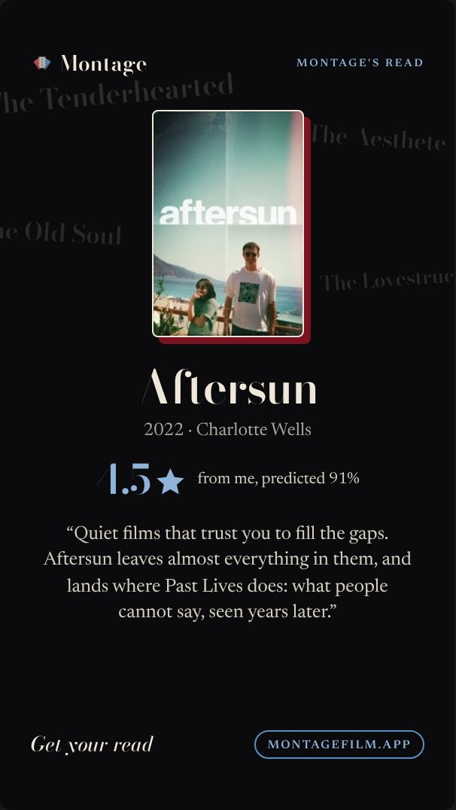
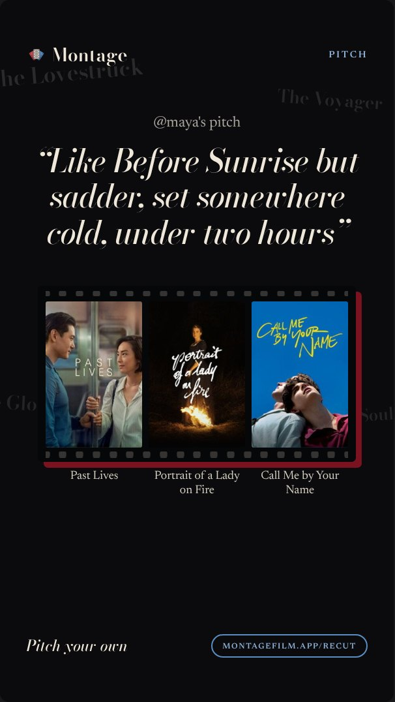

9 · Montage's read
Montage's read
/api/read-card · Story
- Layout kept (owner likes it).
- Spine replaces the poster's offset; the poster keeps its cream keyline.
- Ghost names off: the read is about one film; The Tenderhearted and The Aesthete floating round Aftersun were unrelated.
spineno ghost names
v2

v3

Montage
Montage's read
Aftersun
2022 · Charlotte Wells
4.5
from me, predicted 91%
“Quiet films that trust you to fill the gaps. Aftersun leaves almost everything in them, and lands where Past Lives does: what people cannot say, seen years later.”
Get your read
montagefilm.app
10 · Pitch card
Pitch card
/api/recut/card/<id> · Story
- Layout kept; the pitch stays in Bodoni italic.
- Spine replaces the offset under the reel.
- Ghost names off: the card is her pitch, not her archetype.
- The three answers as a plain row with gaps, or on the subtle reel.
spineno ghost namesplain row
v2

v3 · plain row
Montage
Pitch
@maya's pitch
“Like Before Sunrise but sadder, set somewhere cold, under two hours”
Past Lives
Portrait of a Lady on Fire
Call Me by Your Name
Pitch your own
montagefilm.app/recut